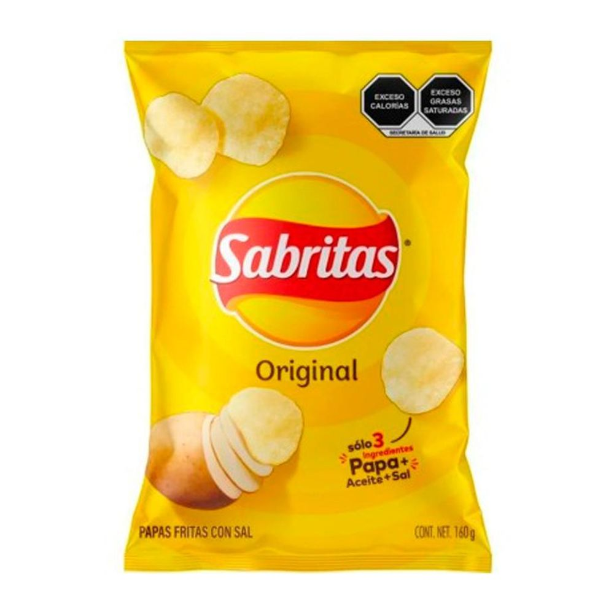

Sabritas
Las Sabritas originales son una marca de papas fritas producidas por la compañía Sabritas. Son conocidas  por su sabor único e inigualable y su textura crujiente. Estas papas fritas vienen en una variedad de tamaños y presentaciones, desde paquetes pequeños ideales para una persona hasta paquetes más grandes para compartir con amigos y familiares. Las Sabritas originales son elaboradas con ingredientes de alta calidad y son sometidas a rigurosos controles de calidad para garantizar su calidad y frescura. Además, la marca se esfuerza por ser responsable y sostenible, y ha implementado prácticas sostenibles en su cadena de suministro y producción.